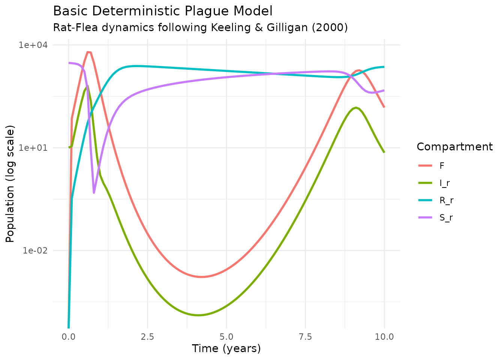
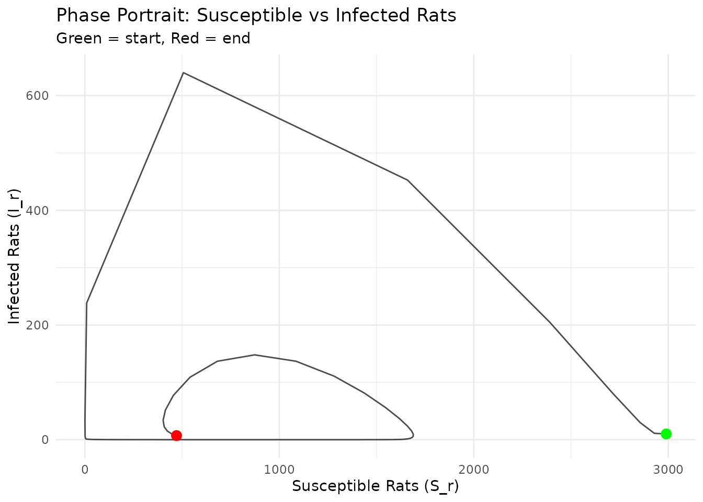
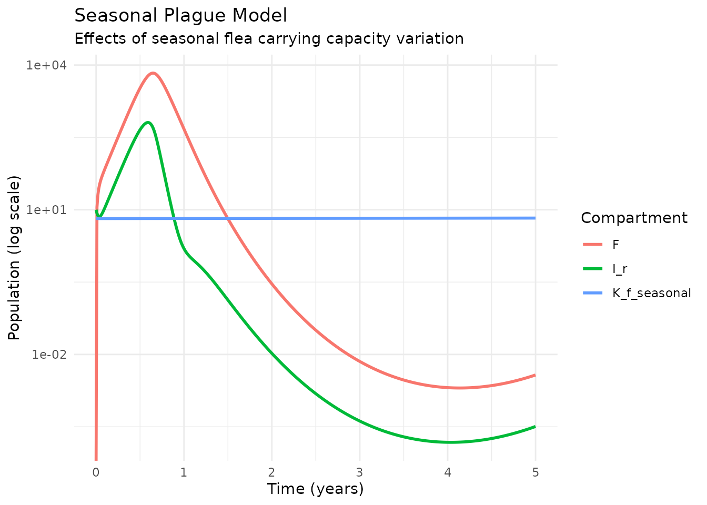
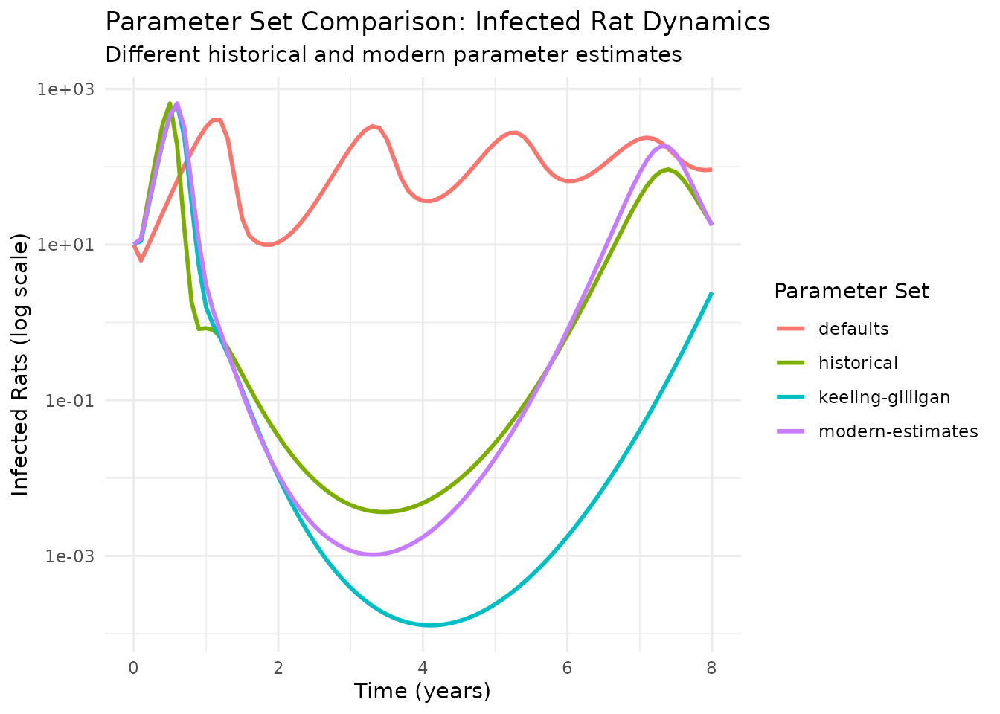

Bubonic Plague: Mathematical Modeling Foundations
yersinia package
2025-09-10
Source:vignettes/reference-deterministic-models.Rmd
reference-deterministic-models.RmdIntroduction
Historical Context
Bubonic plague, caused by the bacterium Yersinia pestis, has been one of history’s most devastating diseases. The “Black Death” of the 14th century killed an estimated 30-60% of Europe’s population, fundamentally altering the course of human history. The disease persists today, with modern outbreaks providing crucial data for understanding its transmission dynamics.
The Role of Mathematical Modeling
Mathematical models help us understand disease transmission mechanisms and predict outbreak patterns. For plague, these models are particularly interesting because they must capture the complex interactions between three populations:
- Rats (the primary host)
- Fleas (the vector)
- Humans (the incidental host)
This vignette explores classical deterministic models based on the foundational work of Keeling & Gilligan (2000), focusing on the rat-flea transmission cycle that drives plague dynamics.
Educational Purpose
Note: This vignette presents reference
implementations for educational purposes. These deterministic
models provide mathematical foundations for understanding plague
transmission. For operational research and realistic population
dynamics, the main yersinia package implements advanced
stochastic models via run_plague_model().
Mathematical Framework
Basic Components
The model tracks five main variables representing the key populations in plague transmission:
- : Susceptible rats
-
:
Infected rats
- : Resistant rats
- : Average number of fleas per rat (flea index)
- : Free infectious fleas
Core Equations
The system is described by the following differential equations:
where is the total rat population.
Biological Interpretation
Each term represents a specific biological process:
- Rat population dynamics follow logistic growth with carrying capacity
-
Disease transmission occurs through infected flea
bites on susceptible rats
- Flea dynamics include reproduction on hosts and host-seeking behavior
- Resistance inheritance allows some rats to be born with immunity (probability )
- Recovery from infection confers permanent immunity with probability
Model Parameters
The parameters capture key biological and epidemiological processes:
Rat Population Parameters
- : Rat carrying capacity
- : Rat population growth rate (per year)
- : Natural death rate of rats (per year)
- : Probability of inherited resistance
Model Implementation
Basic Deterministic Model
We implement the core model using the odin framework,
integrating with the package parameter system:
# Basic deterministic model using inline odin code
basic_plague_model <- suppressMessages(odin::odin({
# State variables
initial(S_r) <- K_r - I_ini
initial(I_r) <- I_ini
initial(R_r) <- 0
initial(N) <- K_f
initial(F) <- 0
# Total rat population
T_r <- S_r + I_r + R_r
# Force of infection for humans (useful for comparison with literature)
lambda_h <- F * exp(-a * T_r)
output(lambda_h) <- lambda_h
# Rat population dynamics
deriv(S_r) <- r_r * S_r * (1 - T_r/K_r) + # Births from susceptibles
r_r * R_r * (1 - p) - # Non-immune births from resistant
d_r * S_r - # Natural deaths
beta_r * (S_r/T_r) * F * (1 - exp(-a*T_r)) # Infections
deriv(I_r) <- beta_r * (S_r/T_r) * F * (1 - exp(-a*T_r)) - # New infections
(d_r + m_r) * I_r # Death/Recovery
deriv(R_r) <- r_r * R_r * (p - T_r/K_r) + # Inherited immune births
m_r * g_r * I_r - # Recovery
d_r * R_r # Natural death
# Flea dynamics
deriv(N) <- r_f * N * (1 - N/K_f) + # Logistic growth
F * (1 - exp(-a*T_r)) / T_r # Free fleas finding rats
deriv(F) <- (d_r + m_r * (1 - g_r)) * I_r * N - # Free infected fleas from dead rats
d_f * F # Free flea deaths
# Parameters from package parameter system
K_r <- user() # Rat carrying capacity
r_r <- user() # Rat population growth rate
p <- user() # Probability of inherited resistance
d_r <- user() # Natural death rate of rats
beta_r <- user() # Rat infection rate from fleas
a <- user() # Flea search efficiency
m_r <- user() # Infected rat mortality rate
g_r <- user() # Probability rat survives infection
r_f <- user() # Flea reproduction rate
K_f <- user() # Flea carrying capacity per rat
d_f <- user() # Death rate of free fleas
I_ini <- user() # Initial infected rats
}))
#> ── R CMD INSTALL ───────────────────────────────────────────────────────────────
#> * installing *source* package ‘odin801fafed’ ...
#> ** this is package ‘odin801fafed’ version ‘0.0.1’
#> ** using staged installation
#> ** libs
#> using C compiler: ‘gcc (Ubuntu 13.3.0-6ubuntu2~24.04) 13.3.0’
#> gcc -std=gnu2x -I"/opt/R/4.5.1/lib/R/include" -DNDEBUG -I/usr/local/include -fpic -g -O2 -UNDEBUG -Wall -pedantic -g -O0 -fdiagnostics-color=always -c odin.c -o odin.o
#> odin.c: In function ‘odin_metadata’:
#> odin.c:165:18: warning: unused variable ‘internal’ [-Wunused-variable]
#> 165 | odin_internal *internal = odin_get_internal(internal_p, 1);
#> | ^~~~~~~~
#> gcc -std=gnu2x -I"/opt/R/4.5.1/lib/R/include" -DNDEBUG -I/usr/local/include -fpic -g -O2 -UNDEBUG -Wall -pedantic -g -O0 -fdiagnostics-color=always -c registration.c -o registration.o
#> gcc -std=gnu2x -shared -L/opt/R/4.5.1/lib/R/lib -L/usr/local/lib -o odin801fafed.so odin.o registration.o -L/opt/R/4.5.1/lib/R/lib -lR
#> installing to /tmp/Rtmp15OO1Z/devtools_install_1f80385cb8ac/00LOCK-file1f80312e3546/00new/odin801fafed/libs
#> ** checking absolute paths in shared objects and dynamic libraries
#> * DONE (odin801fafed)Running the Basic Model
We use the package parameter system to load established parameter values:
# Load Keeling & Gilligan parameter values
params <- load_scenario("keeling-gilligan")
print(params)
#> 🦠 Plague Scenario (keeling-gilligan)
#> 📄 Biological parameters from Keeling & Gilligan (2000) metapopulation plague model
#> 📚 Source: Keeling, M. J., & Gilligan, C. A. (2000)
#>
#> 🐀 Rat Population Parameters:
#> r_r = 5.000 # Rat population growth rate (per year)
#> d_r = 0.200 # Natural death rate of rats (per year)
#> p = 0.975 # Probability of inherited resistance
#>
#> 🦟 Flea Parameters:
#> K_f = 6.570 # Flea carrying capacity per rat
#> r_f = 20.000 # Flea reproduction rate (per year)
#> d_f = 10.000 # Death rate of free fleas (per year)
#> a = 0.004 # Flea search efficiency
#>
#> 🔬 Disease Parameters:
#> beta_r = 4.700 # Rat infection rate from fleas (per year)
#> m_r = 20.000 # Infected rat mortality rate (per year)
#> g_r = 0.020 # Probability rat survives infection
#>
#> 👤 Human Parameters:
#> r_h = 0.045 # Human population growth rate (per year)
#> d_h = 0.040 # Natural death rate of humans (per year)
#> beta_h = 0.010 # Human infection rate from fleas
#> m_h = 26.000 # Human recovery rate (per year)
#> g_h = 0.100 # Probability human survives infection
#>
#> ⚙️ Other Parameters:
#> mu_r = 0.030 # Rat movement rate (per year)
#> mu_f = 0.008 # Flea movement rate (per year)
#> seasonal_amplitude = 0.200 #
#>
#> 📈 Basic Reproduction Number (R₀): 581.657 ✅ (Disease can spread)
# Add initial conditions (not included in scenario files)
params$I_ini <- 10 # Initial infected rats
params$K_r <- 3000 # Rat carrying capacity for deterministic model
# Create model instance with package parameters
model <- basic_plague_model$new(user = params)
# Run simulation over 10 years
times <- seq(0, 10, by = 0.1)
results <- model$run(times)
# Convert to tidy format for analysis
results_tidy <- results |>
tibble::as_tibble() |>
pivot_longer(-t, names_to = "compartment", values_to = "value") |>
rename(time = t)
# Plot key compartments
results_tidy |>
filter(compartment %in% c("S_r", "I_r", "R_r", "F")) |>
ggplot(aes(time, value, color = compartment)) +
geom_line(linewidth = 1) +
scale_y_log10() +
labs(
title = "Basic Deterministic Plague Model",
subtitle = "Rat-Flea dynamics following Keeling & Gilligan (2000)",
x = "Time (years)",
y = "Population (log scale)",
color = "Compartment"
) +
theme_minimal()
Model Analysis
Basic Reproduction Number
The basic reproduction number determines whether the disease can establish in the population:
# Calculate R0 using package function
R0 <- calculate_R0(params)
cat("Basic Reproduction Number (R₀):", round(R0, 3), "\n")
#> Basic Reproduction Number (R₀): 698.016
if (R0 > 1) {
cat("✓ R₀ > 1: Disease can invade the population\n")
} else {
cat("✗ R₀ < 1: Disease will die out\n")
}
#> ✓ R₀ > 1: Disease can invade the population
# Compare different parameter scenarios
scenarios <- c("keeling-gilligan", "modern-estimates", "historical")
R0_comparison <- data.frame(
Scenario = scenarios,
R0 = sapply(scenarios, function(x) calculate_R0(load_scenario(x)))
)
print(R0_comparison)
#> Scenario R0
#> keeling-gilligan keeling-gilligan 581.6568
#> modern-estimates modern-estimates 684.9290
#> historical historical 596.0916Phase Portrait Analysis
Phase portraits reveal the system’s dynamical behavior:
# Create phase portrait (S_r vs I_r)
dat <- results_tidy |>
select(time, compartment, value) |>
pivot_wider(names_from = compartment, values_from = value)
ggplot(dat, aes(S_r, I_r)) +
geom_path(alpha = 0.7) +
geom_point(data = slice(dat, 1), color = "green", size = 3) + # Start
geom_point(data = slice(dat, n()), color = "red", size = 3) + # End
labs(
title = "Phase Portrait: Susceptible vs Infected Rats",
subtitle = "Green = start, Red = end",
x = "Susceptible Rats (S_r)",
y = "Infected Rats (I_r)"
) +
theme_minimal()
Seasonal Deterministic Model
Environmental seasonality affects plague dynamics through flea population cycles. We extend the basic model to include seasonal forcing:
seasonal_plague_model <- suppressMessages(odin::odin({
# State variables (same as basic model)
initial(S_r) <- K_r - I_ini
initial(I_r) <- I_ini
initial(R_r) <- 0
initial(N) <- K_f
initial(F) <- 0
# Total rat population
T_r <- S_r + I_r + R_r
# Force of infection for humans
lambda_h <- F * exp(-a * T_r)
output(lambda_h) <- lambda_h
# Seasonal forcing on flea carrying capacity
season_t <- interpolate(day, season, 'spline')
K_f_seasonal <- K_f * (1 + seasonal_amplitude) ^ season_t
output(K_f_seasonal) <- K_f_seasonal
# Rat population dynamics (unchanged from basic model)
deriv(S_r) <- r_r * S_r * (1 - T_r/K_r) +
r_r * R_r * (1 - p) -
d_r * S_r -
beta_r * (S_r/T_r) * F * (1 - exp(-a*T_r))
deriv(I_r) <- beta_r * (S_r/T_r) * F * (1 - exp(-a*T_r)) -
(d_r + m_r) * I_r
deriv(R_r) <- r_r * R_r * (p - T_r/K_r) +
m_r * g_r * I_r -
d_r * R_r
# Flea dynamics with seasonal carrying capacity
deriv(N) <- r_f * N * (1 - N/K_f_seasonal) + # Seasonal logistic growth
F * (1 - exp(-a*T_r)) / T_r # Free fleas finding rats
deriv(F) <- (d_r + m_r * (1 - g_r)) * I_r * N - # Free infected fleas from dead rats
d_f * F # Free flea deaths
# Parameters from package system
K_r <- user() # Rat carrying capacity
r_r <- user() # Rat population growth rate
p <- user() # Probability of inherited resistance
d_r <- user() # Natural death rate of rats
beta_r <- user() # Rat infection rate from fleas
a <- user() # Flea search efficiency
m_r <- user() # Infected rat mortality rate
g_r <- user() # Probability rat survives infection
r_f <- user() # Flea reproduction rate
K_f <- user() # Base flea carrying capacity per rat
d_f <- user() # Death rate of free fleas
I_ini <- user() # Initial infected rats
# Seasonal forcing parameters
seasonal_amplitude <- user() # Amplitude of seasonal forcing
day[] <- user() # Vector of days for interpolation
season[] <- user() # Vector of seasonal values
dim(day) <- user()
dim(season) <- user()
}))
#> ── R CMD INSTALL ───────────────────────────────────────────────────────────────
#> * installing *source* package ‘odin38e1bca9’ ...
#> ** this is package ‘odin38e1bca9’ version ‘0.0.1’
#> ** using staged installation
#> ** libs
#> using C compiler: ‘gcc (Ubuntu 13.3.0-6ubuntu2~24.04) 13.3.0’
#> gcc -std=gnu2x -I"/opt/R/4.5.1/lib/R/include" -DNDEBUG -I/usr/local/include -fpic -g -O2 -UNDEBUG -Wall -pedantic -g -O0 -fdiagnostics-color=always -c odin.c -o odin.o
#> gcc -std=gnu2x -I"/opt/R/4.5.1/lib/R/include" -DNDEBUG -I/usr/local/include -fpic -g -O2 -UNDEBUG -Wall -pedantic -g -O0 -fdiagnostics-color=always -c registration.c -o registration.o
#> gcc -std=gnu2x -shared -L/opt/R/4.5.1/lib/R/lib -L/usr/local/lib -o odin38e1bca9.so odin.o registration.o -L/opt/R/4.5.1/lib/R/lib -lR
#> installing to /tmp/Rtmp15OO1Z/devtools_install_1f8078031447/00LOCK-file1f804cd2494f/00new/odin38e1bca9/libs
#> ** checking absolute paths in shared objects and dynamic libraries
#> * DONE (odin38e1bca9)Seasonal Model Analysis
# Load parameters and add seasonal forcing
params <- load_scenario("keeling-gilligan")
params$seasonal_amplitude <- 0.3 # 30% seasonal variation
# Create seasonal forcing (sinusoidal pattern)
days <- seq(0, 365, by = 1)
seasonal_pattern <- sin(2 * pi * days / 365)
# Add seasonal data to parameters
params$day <- days
params$season <- seasonal_pattern
params$I_ini <- 10 # Initial infected rats
params$K_r <- 3000 # Rat carrying capacity
# Create seasonal model
model_seasonal <- seasonal_plague_model$new(user = params)
# Run over multiple years to see seasonal effects
times_seasonal <- seq(0, 5, by = 0.01) # 5 years, high resolution
results_seasonal <- model_seasonal$run(times_seasonal)
# Convert to tidy format
results_seasonal_tidy <- results_seasonal |>
tibble::as_tibble() |>
pivot_longer(-t, names_to = "compartment", values_to = "value") |>
rename(time = t)
# Plot showing seasonal effects
results_seasonal_tidy |>
filter(compartment %in% c("I_r", "F", "K_f_seasonal")) |>
ggplot(aes(time, value, color = compartment)) +
geom_line(linewidth = 1) +
scale_y_log10() +
labs(
title = "Seasonal Plague Model",
subtitle = "Effects of seasonal flea carrying capacity variation",
x = "Time (years)",
y = "Population (log scale)",
color = "Compartment"
) +
theme_minimal()
Human-Extended Model
The model can be extended to include human populations, important for understanding plague’s impact on human societies:
human_plague_model <- suppressMessages(odin::odin({
# Rat state variables
initial(S_r) <- K_r - I_ini
initial(I_r) <- I_ini
initial(R_r) <- 0
initial(N) <- K_f
initial(F) <- 0
# Human state variables
initial(S_h) <- K_h
initial(I_h) <- 0
initial(R_h) <- 0
# Total populations
T_r <- S_r + I_r + R_r
T_h <- S_h + I_h + R_h
# Forces of infection
lambda_r <- beta_r * (S_r/T_r) * F * (1 - exp(-a*T_r)) # Rats
lambda_h <- beta_h * F * exp(-a * T_r) # Humans
output(lambda_h) <- lambda_h
# Rat population dynamics (unchanged)
deriv(S_r) <- r_r * S_r * (1 - T_r/K_r) +
r_r * R_r * (1 - p) -
d_r * S_r - lambda_r
deriv(I_r) <- lambda_r - (d_r + m_r) * I_r
deriv(R_r) <- r_r * R_r * (p - T_r/K_r) +
m_r * g_r * I_r - d_r * R_r
# Flea dynamics (unchanged)
deriv(N) <- r_f * N * (1 - N/K_f) + F * (1 - exp(-a*T_r)) / T_r
deriv(F) <- (d_r + m_r * (1 - g_r)) * I_r * N - d_f * F
# Human population dynamics
deriv(S_h) <- r_h * (S_h + R_h) * (1 - T_h/K_h) - d_h * S_h - lambda_h
deriv(I_h) <- lambda_h - (d_h + m_h) * I_h
deriv(R_h) <- m_h * g_h * I_h - d_h * R_h
# Parameters
K_r <- user() # Rat carrying capacity
r_r <- user() # Rat population growth rate
p <- user() # Probability of inherited resistance
d_r <- user() # Natural death rate of rats
beta_r <- user() # Rat infection rate from fleas
a <- user() # Flea search efficiency
m_r <- user() # Infected rat mortality rate
g_r <- user() # Probability rat survives infection
r_f <- user() # Flea reproduction rate
K_f <- user() # Flea carrying capacity per rat
d_f <- user() # Death rate of free fleas
I_ini <- user() # Initial infected rats
# Human parameters
K_h <- user() # Human carrying capacity
r_h <- user() # Human population growth rate
d_h <- user() # Natural death rate of humans
beta_h <- user() # Human infection rate from fleas
m_h <- user() # Human recovery rate
g_h <- user() # Probability human survives infection
}))
#> ── R CMD INSTALL ───────────────────────────────────────────────────────────────
#> * installing *source* package ‘odin5d49a224’ ...
#> ** this is package ‘odin5d49a224’ version ‘0.0.1’
#> ** using staged installation
#> ** libs
#> using C compiler: ‘gcc (Ubuntu 13.3.0-6ubuntu2~24.04) 13.3.0’
#> gcc -std=gnu2x -I"/opt/R/4.5.1/lib/R/include" -DNDEBUG -I/usr/local/include -fpic -g -O2 -UNDEBUG -Wall -pedantic -g -O0 -fdiagnostics-color=always -c odin.c -o odin.o
#> odin.c: In function ‘odin_metadata’:
#> odin.c:207:18: warning: unused variable ‘internal’ [-Wunused-variable]
#> 207 | odin_internal *internal = odin_get_internal(internal_p, 1);
#> | ^~~~~~~~
#> gcc -std=gnu2x -I"/opt/R/4.5.1/lib/R/include" -DNDEBUG -I/usr/local/include -fpic -g -O2 -UNDEBUG -Wall -pedantic -g -O0 -fdiagnostics-color=always -c registration.c -o registration.o
#> gcc -std=gnu2x -shared -L/opt/R/4.5.1/lib/R/lib -L/usr/local/lib -o odin5d49a224.so odin.o registration.o -L/opt/R/4.5.1/lib/R/lib -lR
#> installing to /tmp/Rtmp15OO1Z/devtools_install_1f80c7b58fb/00LOCK-file1f80487b3d12/00new/odin5d49a224/libs
#> ** checking absolute paths in shared objects and dynamic libraries
#> * DONE (odin5d49a224)Human Model Analysis
# Load parameters including human parameters
params_human <- load_scenario("historical") # Use historical parameters for medieval scenario
print(params_human)
#> 🦠 Plague Scenario (historical)
#> 📄 Biological parameters for historical plague outbreaks (14th-17th centuries)
#> 📚 Source: Historical analysis and paleoepidemiology
#>
#> 🐀 Rat Population Parameters:
#> r_r = 6.000 # Rat population growth rate (per year)
#> d_r = 0.150 # Natural death rate of rats (per year)
#> p = 0.980 # Probability of inherited resistance
#>
#> 🦟 Flea Parameters:
#> K_f = 5.000 # Flea carrying capacity per rat
#> r_f = 15.000 # Flea reproduction rate (per year)
#> d_f = 8.000 # Death rate of free fleas (per year)
#> a = 0.003 # Flea search efficiency
#>
#> 🔬 Disease Parameters:
#> beta_r = 6.000 # Rat infection rate from fleas (per year)
#> m_r = 25.000 # Infected rat mortality rate (per year)
#> g_r = 0.010 # Probability rat survives infection
#>
#> 👤 Human Parameters:
#> r_h = 0.030 # Human population growth rate (per year)
#> d_h = 0.080 # Natural death rate of humans (per year)
#> beta_h = 0.015 # Human infection rate from fleas
#> m_h = 35.000 # Human recovery rate (per year)
#> g_h = 0.050 # Probability human survives infection
#>
#> ⚙️ Other Parameters:
#> mu_r = 0.020 # Rat movement rate (per year)
#> mu_f = 0.005 # Flea movement rate (per year)
#> seasonal_amplitude = 0.300 #
#>
#> 📈 Basic Reproduction Number (R₀): 596.092 ✅ (Disease can spread)
# Add initial conditions for human model
params_human$I_ini <- 10 # Initial infected rats
params_human$K_r <- 3000 # Rat carrying capacity
params_human$K_h <- 5000 # Human carrying capacity
# Create human model
model_human <- human_plague_model$new(user = params_human)
# Simulate Black Death scenario (5 years)
times_human <- seq(0, 5, by = 0.01)
results_human <- model_human$run(times_human)
# Convert to tidy format
results_human_tidy <- results_human |>
tibble::as_tibble() |>
pivot_longer(-t, names_to = "compartment", values_to = "value") |>
rename(time = t)
# Plot human dynamics
results_human_tidy |>
filter(compartment %in% c("S_h", "I_h", "R_h")) |>
mutate(compartment = case_when(
compartment == "S_h" ~ "Susceptible Humans",
compartment == "I_h" ~ "Infected Humans",
compartment == "R_h" ~ "Recovered Humans"
)) |>
ggplot(aes(time, value, color = compartment)) +
geom_line(linewidth = 1) +
labs(
title = "Human Population Dynamics in Plague Outbreak",
subtitle = "Historical parameters representing medieval conditions",
x = "Time (years)",
y = "Human Population",
color = "Compartment"
) +
theme_minimal()
# Calculate mortality impact
final_human_pop <- results_human_tidy |>
filter(compartment %in% c("S_h", "I_h", "R_h"), time == max(time)) |>
summarise(final_total = sum(value)) |>
pull(final_total)
initial_human_pop <- params_human$K_h
mortality_rate <- (initial_human_pop - final_human_pop) / initial_human_pop * 100
cat("Historical plague scenario mortality:", round(mortality_rate, 1), "%\n")
#> Historical plague scenario mortality: 31.4 %Parameter Comparison
Understanding how different parameter sets affect model behavior:
# Compare all available parameter sets
param_sets <- c("keeling-gilligan", "modern-estimates", "historical", "defaults")
comparison_results <- list()
for (param_set in param_sets) {
params <- load_scenario(param_set)
params$I_ini <- 10 # Add initial conditions
params$K_r <- 3000 # Add carrying capacity
model <- basic_plague_model$new(user = params)
results <- model$run(seq(0, 8, by = 0.1))
results_tidy <- results |>
tibble::as_tibble() |>
pivot_longer(-t, names_to = "compartment", values_to = "value") |>
rename(time = t) |>
mutate(parameter_set = param_set)
comparison_results[[param_set]] <- results_tidy
}
# Combine all results
all_results <- do.call(rbind, comparison_results)
# Plot comparison of infected rats
all_results |>
filter(compartment == "I_r") |>
ggplot(aes(time, value, color = parameter_set)) +
geom_line(linewidth = 1) +
scale_y_log10() +
labs(
title = "Parameter Set Comparison: Infected Rat Dynamics",
subtitle = "Different historical and modern parameter estimates",
x = "Time (years)",
y = "Infected Rats (log scale)",
color = "Parameter Set"
) +
theme_minimal()
# Summary table of key characteristics
param_summary <- data.frame(
Parameter_Set = param_sets,
R0 = sapply(param_sets, function(x) round(calculate_R0(load_scenario(x)), 3)),
Peak_Infected = sapply(param_sets, function(x) {
params <- load_scenario(x)
params$I_ini <- 10 # Add initial conditions
params$K_r <- 3000 # Add carrying capacity
model <- basic_plague_model$new(user = params)
results <- model$run(seq(0, 8, by = 0.1))
round(max(results[, "I_r"]), 0)
})
)
print(param_summary)
#> Parameter_Set R0 Peak_Infected
#> keeling-gilligan keeling-gilligan 581.657 640
#> modern-estimates modern-estimates 684.929 651
#> historical historical 596.092 649
#> defaults defaults 581.657 401Comparative Analysis
Model Behavior Across Scenarios
Different parameter sets represent different historical periods and epidemiological contexts:
- Keeling-Gilligan: Original model parameters from foundational paper
-
Modern-estimates: Contemporary parameter values
based on recent outbreaks
- Historical: Medieval parameters representing Black Death conditions
- Defaults: Package default values for general use
Key Insights
- R₀ Variation: Different parameter sets produce varying epidemic potential
- Peak Dynamics: Outbreak severity depends critically on transmission parameters
- Temporal Patterns: Seasonal forcing creates cyclical outbreak patterns
- Human Impact: Historical parameters suggest severe population impacts
Appendix: Interactive Model Explorer
For hands-on exploration of model behavior, the package provides an interactive gadget:
# Launch interactive plague model explorer
# This opens a Shiny gadget for parameter exploration
explore_plague_model()The gadget allows you to:
- Adjust parameters using sliders for all model parameters
- Visualize results with multiple plot types (time series, phase portraits)
- Compare scenarios by modifying parameters and seeing real-time updates
- Export parameters for use in your own analyses
To use the gadget:
- Run
explore_plague_model()in your R console - Adjust parameters using the sliders in the left panel
- Click “Run Simulation” to update the plots
- Use different tabs to see various visualizations
- Click “Done” to return modified parameters to your workspace
Note: The interactive gadget requires the
shiny and miniUI packages.
Summary
This vignette has presented the mathematical foundations of deterministic plague models, implementing:
Core Models
- Basic deterministic model: Fundamental rat-flea dynamics
-
Seasonal model: Environmental forcing through flea
cycles
- Human-extended model: Population impacts on human societies
Key Features
- Mathematical rigor: Full differential equation formulations with biological interpretation
-
Package integration: Uses
yersiniaparameter management system - Historical context: Parameters representing different epidemiological periods
- Interactive exploration: Gadget-based parameter investigation
Educational Value
These deterministic models provide: - Theoretical foundation for understanding plague transmission mechanisms - Mathematical framework for epidemiological analysis - Historical perspective on plague’s societal impact - Reference implementation for comparison with advanced stochastic models
For operational plague modeling and realistic population dynamics
with stochasticity, use the main yersinia package functions
described in the introductory vignette.
References
- Keeling, M. J., & Gilligan, C. A. (2000). Metapopulation dynamics of bubonic plague. Nature, 407(6806), 903-906.
- Stenseth, N. C., et al. (2008). Plague: past, present, and future. PLoS Medicine, 5(1), e3.
- Bramanti, B., et al. (2019). Assessing the origins of the European Plagues following the Black Death. Proceedings of the National Academy of Sciences, 116(28), 13931-13940.